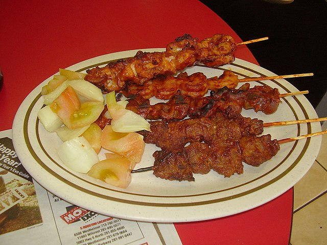

Beef Suya
Home

Beef suya is a heavily spiced sweet/sour skewer.
Ingredients
- 1/2 cup dry roasted peanuts
- 1 tbsp sweet paprika
- 1 tbsp ground ginger
- 1 tbsp garlic powder
- 1 tbsp onion powder
- 2 tsp packed light brown sugar
- 1 tsp cayenne pepper
- Salt and Pepper
- 3 tbsp grapeseed or other neutral oil
- 1.5 lb flatiron steak, sliced into 1/2 inch strips
- 1 tbsp lime juice, lime wedges
- Combine peanuts paprika, ginger, onion, garlic, sugar, cayenne, 3/4 tsp salt, 1 tsp pepper in food processor
- Reserve 1/3 cup of seasoning. Set aside.
- In large bowl combine seasoning with oil to form a paste
- In large bowl combine beef with 1 tsp salt. Toss to evenly coat.
- Add past to bowl with beef. Toss to evenly coat, massage into meat.
- Pack strips onto 12 inch skewers
- Place skewers on wire rack on top of foil lined rimmed baking sheet
- Heat with broiler, about 5 minutes, flipping after 2.5 minutes.
- Transfer to plate and let rest for 5 minutes
- Brush with lime juice. Sprinkle with rest of seasoning.
- Serve with lime wedges